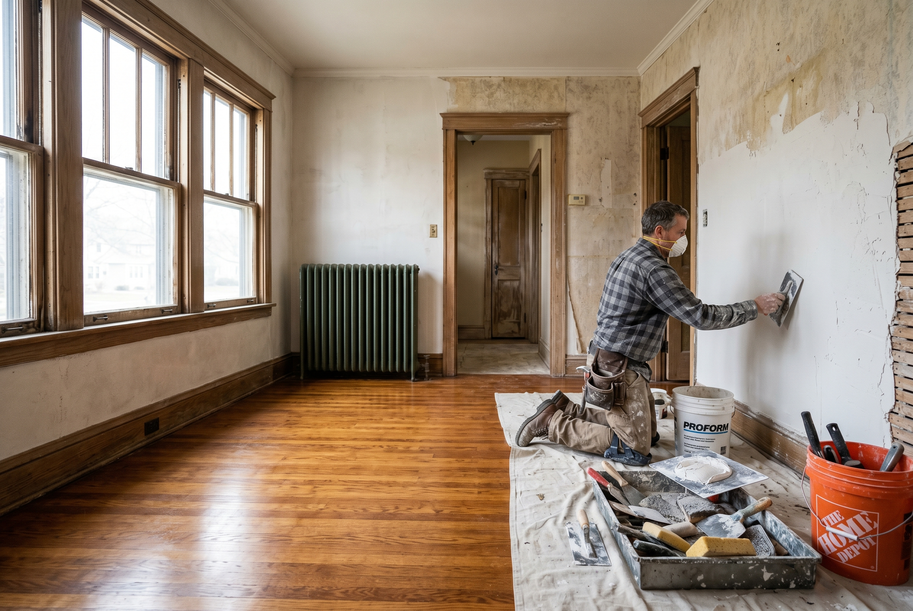
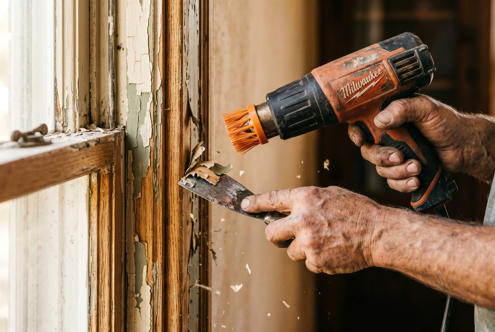

Published September 7, 2026 • By Black Ridge Contracting
The Drake neighborhood is one of the more interesting renovation markets in Des Moines. The architecture is great, mostly 1920s to 1940s Foursquares, Craftsman bungalows, and Tudor Revivals on smaller lots, walking distance to Drake University and the surrounding commercial. But the housing stock has been through a lot. Many homes spent decades as student rentals before getting reconverted back to single-family or duplex.
If you're renovating a Drake home, whether you bought a reconversion candidate or you've owned it for years, here's what a Central Iowa contractor sees on these projects.
What Makes Drake Homes Different
Three things set Drake homes apart from typical Central Iowa renovations. First, the original construction is generally good. These homes were built when wood was cheap and labor was skilled, so the framing is true-dimension lumber and the trim is real oak or fir. Second, the rental history. A lot of these homes were rented out from the 1970s through the 2010s, which means decades of deferred maintenance and cosmetic damage. Third, the lots are smaller and the homes are closer together, which affects construction access and permit conversations.

The Rental Conversion Problem
The single most common issue we see on Drake homes is the rental conversion. At some point in the past, someone took an original single-family and divided it into apartments. They added a kitchen upstairs, ran extra plumbing, added a second electrical panel, partitioned bedrooms. Decades later, the next owner wants to convert it back to single-family.
What that looks like in practice:
- Multiple water heaters and HVAC zones that need to be consolidated or modernized
- Patched plumbing from when the upstairs kitchen was added, which now runs through walls you wouldn't expect
- Bedroom partitions built into formerly large rooms that need to come out
- Original wood floors hidden under carpet that was probably installed three times
- Plaster walls with five layers of paint, sometimes with vinyl wallpaper underneath
The good news is that reconversions usually reveal a great original house underneath. The bad news is that the project budget often runs 30 to 50 percent above what an equivalent project would cost on a never-rented home.

Original Plaster, Original Trim, Original Floors
The three things that make a Drake home worth keeping are the plaster, the original trim, and the hardwood floors. They're also the three things most damaged by years of rental use.
Plaster repair on Drake homes is usually a skim-coat job. The plaster itself is generally still bonded to the lath, you just have to fix the cracks, fill the holes from tenant pictures and TV mounts, and put a smooth surface over it. Replacing entire walls with drywall is a mistake on most Drake homes because it flattens the original room geometry.
Original oak or fir trim usually has 5 to 8 layers of paint. Stripping and refinishing brings back the wood but takes time and labor. Replacing with new trim is usually faster but it never quite matches because the original profiles aren't manufactured the same way anymore. We typically strip what we can and only replace what's damaged beyond repair.
Original hardwood floors are almost always salvageable. Even when the floors look terrible under carpet, a sand and refinish brings them back. Cost is $4 to $7 per square foot, usually the highest-return renovation dollar you can spend on a Drake home.
Kitchens and Baths
Kitchens and baths in Drake homes are usually the smallest in the metro because the original floor plans were designed for the early 20th century. Modern buyers want larger kitchens and updated baths, but expanding the footprint usually requires moving load-bearing walls or borrowing space from adjacent rooms.
The smart move on most Drake kitchens is to update within the existing footprint with quality finishes rather than blow out walls. Quality semi-custom cabinetry, quartz counters, and good lighting in a 100 square foot kitchen often beats a generic open-concept kitchen in terms of how it shows.
Baths are usually 5x7 or 5x8 originals. We typically convert one bathroom on the main floor to a three-quarter or full bath, add a primary bath upstairs if there's space, and leave the original tile and fixtures where they can be tastefully restored.
Realistic Cost Ranges for Drake Renovations
- Cosmetic refresh, paint and flooring: $15,000 to $35,000
- Kitchen update within existing footprint: $40,000 to $90,000
- Bathroom remodel: $20,000 to $45,000
- Rental-to-owner-occupied reconversion: $100,000 to $250,000 depending on condition
- Full restoration: $200,000 to $400,000
When to Walk Away From a Drake Renovation
Not every Drake home pencils out. Walk if you see:
- Foundation settlement that exceeds two inches across the home
- Visible fire damage to original framing
- Three or more layers of roof shingles indicating decades of patch-fixes
- Major water damage to plaster and original floors that cannot be dried out
- Original cast iron drain stack at the end of its service life combined with mid-renovation pricing pressure
The Drake market has a price ceiling that limits how much you can recover. If the project budget grows past about $300,000 on a typical Drake footprint, the math gets hard to make work on resale.
Want a Walkthrough?
If you bought a Drake home or you're thinking about it and want a contractor's read on what's underneath the cosmetic damage, we do free walkthroughs. See our remodeling services or call (515) 219-4654.
Frequently Asked Questions
Drake homes are mostly Foursquare, Craftsman bungalow, Tudor Revival, and 1920s to 1940s Iowa vernacular, typically 1.5 to 2 stories on smaller lots.
A cosmetic refresh runs $15,000 to $35,000. A rental-to-owner-occupied reconversion typically runs $100,000 to $250,000.
It depends on the original construction and how heavy the rental use was. Sound bones and good original character usually pencil out. Heavy structural damage may not.
Original plaster damage from rental use and undone mechanical work from previous DIY repairs.